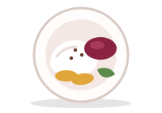

Por qué comprar en la plaza
Fresco
La fruta y la verdura llegan cada madrugada y se venden el mismo día.
Local
Cada puesto tiene nombre propio y dueños que conoces por el saludo.
Hecho a mano
Pan, jugos y almuerzos preparados al momento, sin atajos.
Fruta del día, pan recién horneado, almuerzo casero, jugos naturales y buen café, todo en un solo lugar.
Conoce los puestos



La fruta y la verdura llegan cada madrugada y se venden el mismo día.
Cada puesto tiene nombre propio y dueños que conoces por el saludo.
Pan, jugos y almuerzos preparados al momento, sin atajos.